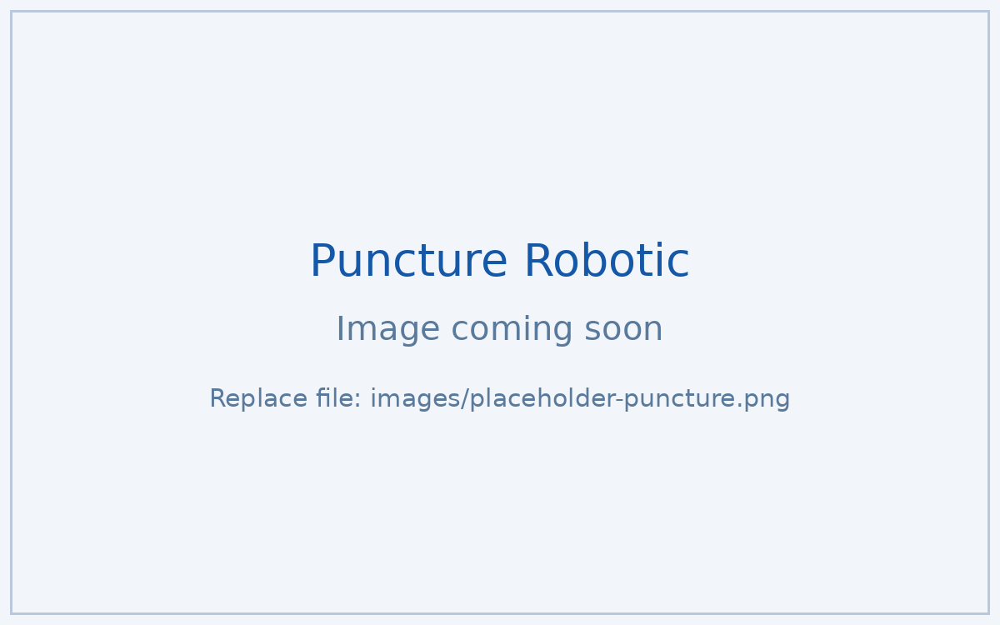

Follicle-holding mechanism for a hair-transplantation robot
ROLE & KEY CONTRIBUTIONS
Mechanical engineer intern leading the end-effector redesign, taken from prototype directly into product.
- Redesigned the follicle-holding mechanism for fewer motors and better space efficiency;
- Designed and simulation-validated a spring-based locking/unlocking mechanism;
- Optimized the casing and bolt-hole layout for assembly accuracy, contributing the mechanism to the company's reusable library.
Overview
Medical robotics rewards mechanisms that are simpler, smaller, and more repeatable. I led the mechanical redesign of the follicle-holding mechanism on a hair-transplantation robot — the end-effector subsystem that must grip delicately and release reliably, thousands of times.
What I did
- Mechanism redesign. Led a redesign that reduced motor dependence and improved space efficiency; optimized the casing and bolt-hole layout for higher assembly accuracy and long-term reliability.
- Spring-based locking. Designed a production-ready spring-based locking/unlocking mechanism, validated its performance in simulation, and saw it adopted directly from prototype into product.
- Reusable design library. The redesigned mechanism was contributed to the company's reusable mechanism library for future product lines.

Scope note: this page describes only publicly shareable aspects of the work.